-
AddRandomNoise 0.5
 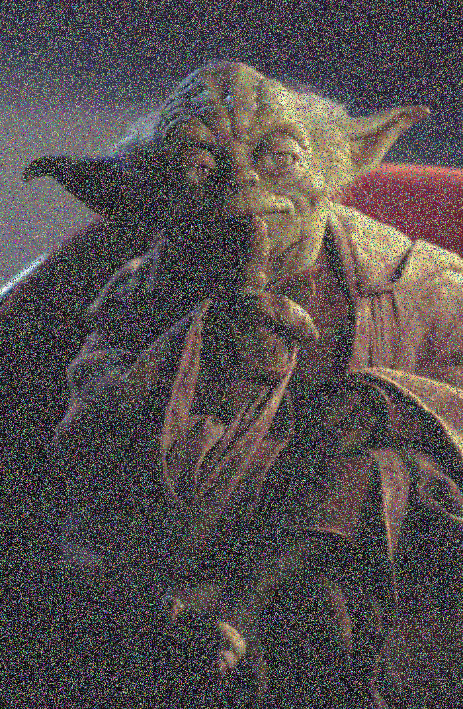
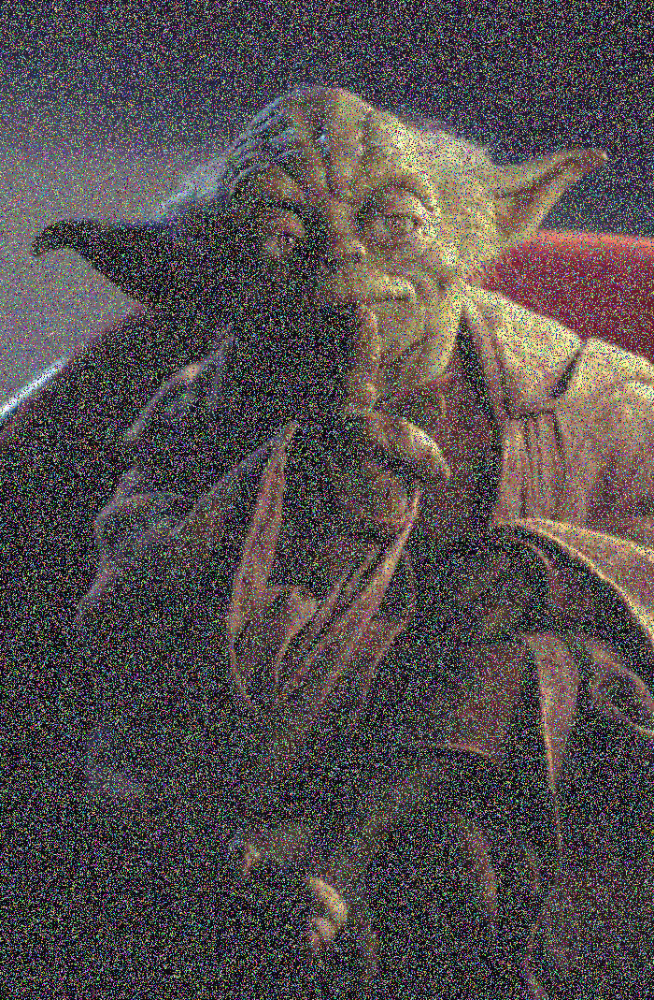
-
Brighten 2

-
Luminance
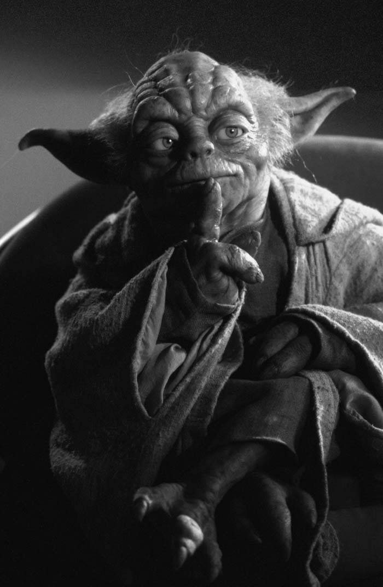
-
Contrast 2


-
Saturate 2

-
Crop (100,100) (500,500)

-
Quantize 4


-
RandomDither 4
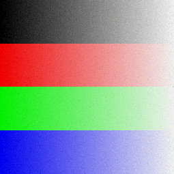
-
Ordered Dither 2x2 4

-
FloydSteinbergDither: Not Implemented
-
Blur3x3 //Blurs image, but makes it darker
 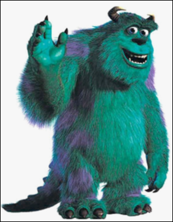
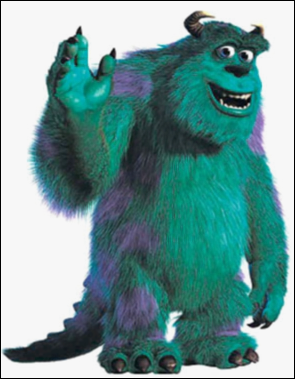
-
Edges3x3
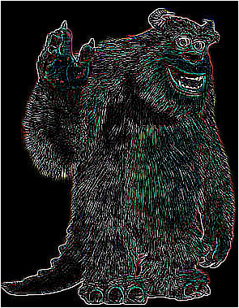
NearestSample: Implemented, see below
BilinearSample: Implemented, see below
GaussianSample: Not Implemented
-
ScaleNearest 1.3
 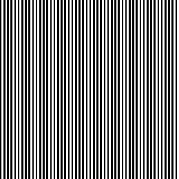
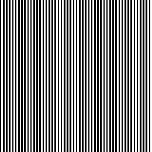
-
ScaleBilinear 1.3
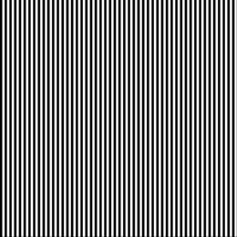
-
ScaleGaussian: Not Implemented
-
SetComposite, SetAlpha //Created a composite image of myself and a famous person!
 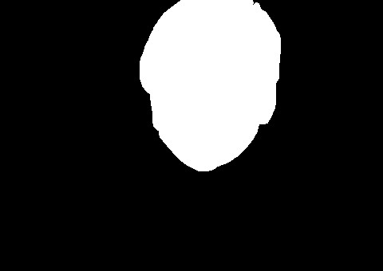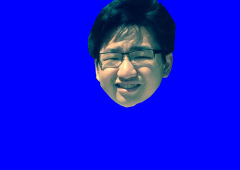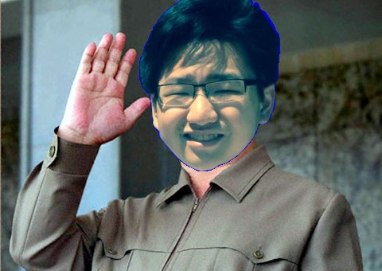
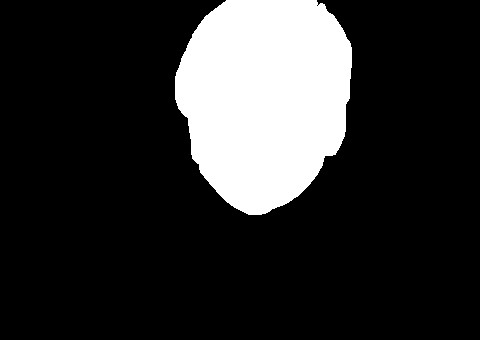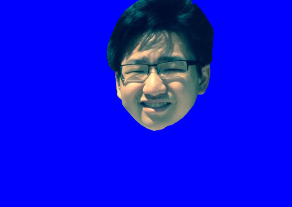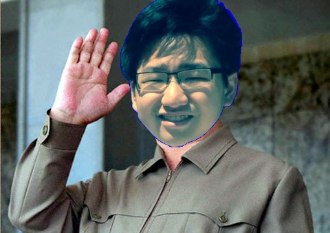
FunFilter: Semi-Implemented. Swirl, doesn't quite work, but it swirls!
Beier-Neely Morphing: Not Implemented
-
Art Submission: Steps of each frame: saturate [-2,2] with 0.5 intervals